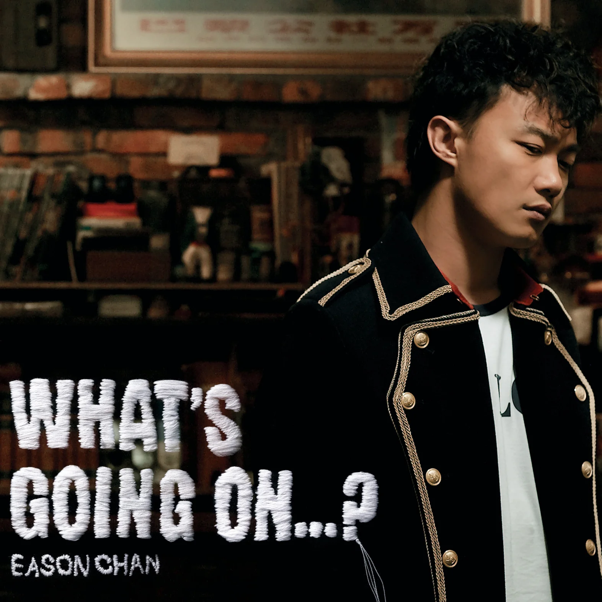

我们总在受伤后听见一句安慰：“没事，时间会治愈一切。”于是我们抱着期待往前走，以为某一天回头看，那些撕心裂肺的难过、求而不得的遗憾、深入骨髓的委屈，都会被岁月轻轻抹平。可走着走着才发现，有些伤口看似结痂，一碰还是会疼；有些人明明淡出了生活，想起时心里依旧空了一块。于是我们开始怀疑：时间到底是治愈者，还是只是让我们学会了忍着痛生活？

本站开设此页面来提升该站的综合性素养以及儒雅底蕴。

该页面由编辑漠河先生全权摘录，若浏览者在访问该页面时，认为自己的作品可以为大家带来沉思，逗乐，自省等益效，可以联系小编进行投稿。

